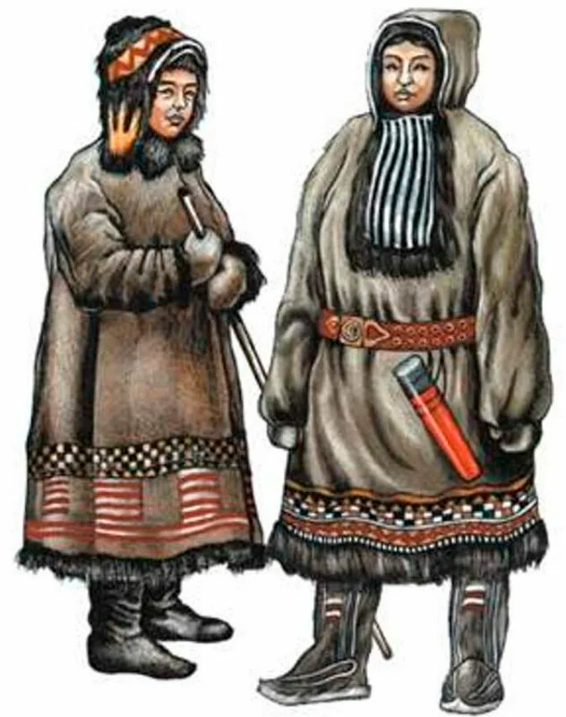
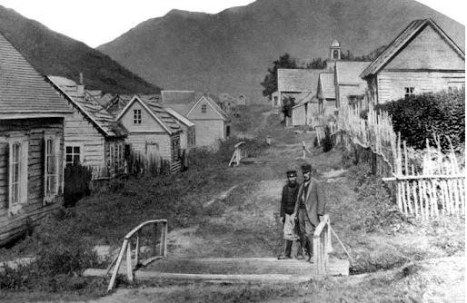
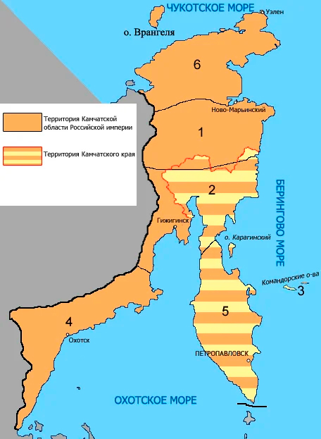
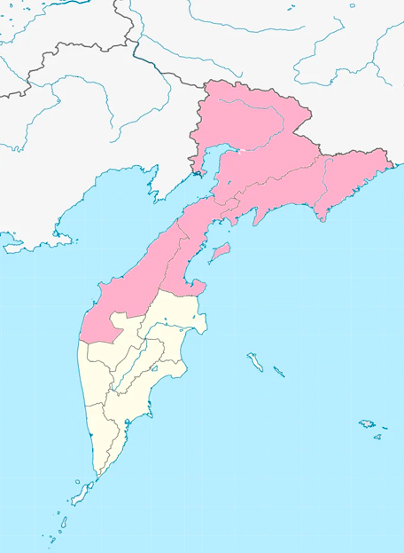
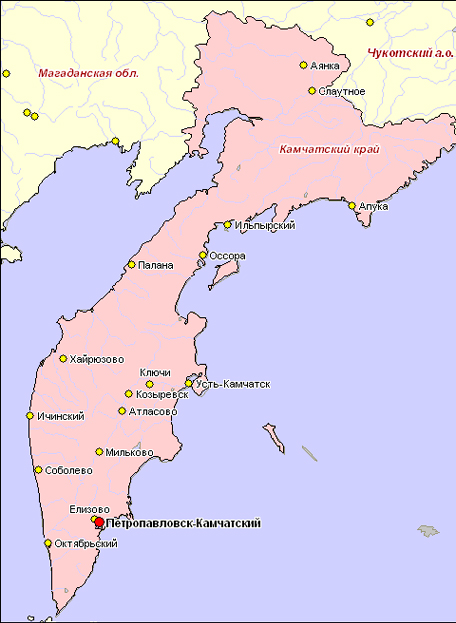

Камчатский край - один из субъектов Российской Федерации, который находится на крайнем востоке России. Население Камчатки составляет 311 000 человек и это довольно мало. Ее административным центром является город Петропавловск-Камчатский, который населяют 180 000 человек, из которых 80% являются русскими. Камчатку населяют множество коренных, но не многочисленных народов, которые имеют очень интересную культуру и историю, о которой мы сегодня и поговорим.
Досуг местных племен до прихода русских на Камчатку
Примерно 20 000 лет назад на Камчатку пришли первые люди, но многие из них решили отправиться дальше в Америку, когда та еще была соединена с Евразией. А те люди, что тут остались в будущем образуют такой народ, как ительмены, который существует и по сей день. Данный народ древнее "древних" египтян и римлян и сегодня их зачастую называют российскими индейцами. Но помимо ительменов на Камчатке, а конкретно на ее севере живут и другие коренные народы: коряки и алюторцы. Но основными жителями будут все же ительмены.
Они все еще употребляли орудия из камня, кости, рога и дерева; средствами передвижения служили долбленые лодки, собачьи упряжки, скользящие лыжи, а на охоте чаще всего использовались снегоступы. Основным занятием ительменов было рыболовство, охота на сухопутных и морских животных, а также собирательство.
В составе Российской империи
Но в конце XVII века на Камчатку приходят русские. Они стали исследовать эти земли и основывать здесь поселения. Это коренному населению не понравилось - ительмены оказывали яростное сопротивление русским: они убили несколько экспедиционных отрядов и устраивали набеги на поселения. А когда русские приходили им мстить, то ительмены убивали своих жен и детей, чтобы они не попали в руки к захватчикам, а потом сами бросались в яростную схватку.
Но, разумеется, что небольшой и, по сути, неразвитый дикий народ не смог противостоять русским чужеземцам, потому к середине XVIII века Камчатский полуостров был полностью освоен Российской империей. Тогда же был заложен Петропавловск-Камчатский. С собой русские принесли много чего интересного, что заинтересовало местных жителей, например бумагу, валенки, огнестрельное оружие. Именно они прозвали жителей Камчатки ительменами, что означает "живущий здесь" и дали помимо этого еще один термин - "камчадалы". С собой русские принесли православную веру, которая заменила привычный многим ительменам шаманизм.
Также тогда Камчатка получила свое название из-за одной одноименной реки, которую в свою очередь назвали в честь одного из землепроходцев Ивана Камчатого. На Камчатку стали заселяться разные народы, но все же преимущественно русские, из-за чего многие ительмены ассимилировались, что привело к уменьшению численности представителей коренного населения Камчатки. То есть, если раньше коренных жителей насчитывалось около 17 000 человек, то в XIX веке их уже было 3000.
В Российской империи Камчатка была областью и имела территорию значительно большую, чем сегодня. Но потом в России начинается гражданская война и Камчатка оказывается под большевиками, те создают там свою Камчатскую губернию, но в последние годы войны полуостров берут белые и оказывают там одно из своих последних сопротивлений.
В составе СССР и РФ
В итоге Камчатка теперь часть не Российской империи или республики, а Советского Союза и входит она в РСФСР. Тогда-то Петропавловск-Камчатский и получил свое современное название (ранее Петропавловский Порт). А в 1932 году была образована Камчатская область, которая, в свою очередь, входила в состав Хабаровского края. Но уже через два года к Камчатской области присоединили Корякский и Чукотский национальные округа. А уже в 1956 году Камчатская область стала самостоятельной административной единицей, а на ее территории находился Корякский автономный округ.
На Камчатку в это время приезжало очень много людей и оставались здесь жить. Именно при СССР население полуострова росло невероятными темпами. Многие приезжали сюда сами, а некоторые были сосланы в лагеря, многие из которых находились в соседской Магаданской области. И уже после лагерей некоторые люди перебирались жить на Камчатку, на которой, кстати, не было ни одного лагеря ГУЛАГ.
Хотелось бы также добавить, несмотря на то, что заселение Камчатки - это хорошо, от этого пострадали коренные жители. Например, Корякский автономный округ, казалось бы предназначен он для коряков и еще некоторых северных коренных народов, но вышло так, что они здесь меньшинство. Хотя это весьма маленький народ и большинством он бы не стал. Но проблема в том, что единственным официальным языком в автономии был русский. Повезло еще хотя бы в том, что корякский язык учили в школах, потому что ительменский язык никак не преподавали.
В конечном итоге Советский Союз развалился, а Камчатка продолжила свою жизнь в Российской Федерации. В 2005 году здесь был проведен референдум по объединению Камчатской области и Корякского автономного округа, что население, собственно, поддержало. В итоге появился новый субъект Российской Федерации - Камчатский край, в составе, которого уже был создан Корякский округ.